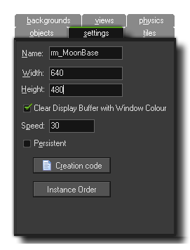
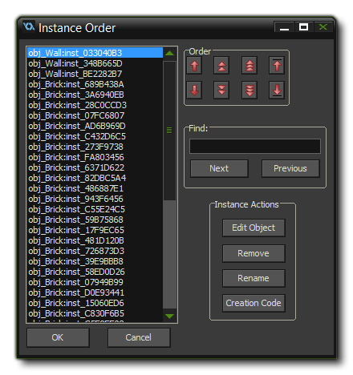

This tab is where you set the basic details of your room and should
be your first stop whenever you create a new room. The following
settings are available:
The "Name" of your room is the unique identifier that you can
use to direct GameMaker: Studio to the correct resource.
This name is really just a "pointer" as it holds the internal id of
the room and "points" GameMaker: Studio to the correct
resource when it is referenced. This means that it is very
important that no other resource has the same name as this
will cause conflicts and cause unexpected errors within your game.
This name is what you will use in all code and actions that move
the player from room to room or change room properties.
As you can imagine, a room has to have a size and this is
defined by the values that you input for its width and height, in
pixels. Be careful here, as it's very easy to say "I'm making a
space game, let's have a room 100,000 x 100,000 pixels!" That is a
recipe for disaster! GameMaker: Studio is powerful, but
there are limits, and so when dealing with rooms it's much better
to keep them as small as possible and then optimise your game
around them, especially if you are making a game for mobile devices
or the web.
Here you have the option to Clear Display Buffer With Window Colour. This option fills the backbuffer with a colour. If you know that the views or backgrounds are going to be covering the whole screen at all times or that you have a fullscreen background being drawn, then you can un-check this (which saves a redraw and so helps optimise your game), but if you have overlapping views that, when on the screen leave open spaces, or your background has any transparency, you should check this so that those area where there is no view are filled in with the draw colour of your choice. Currently this colour can only be set through code using window_set_colour().
NOTE: If you are using automatic aspect ratio correction (as set in the Global Game Settings, then you should always have this checked otherwise you can get odd effects over the "letterbox" that your game is drawn in. If you do not use this option then you can un-check this and get a small boost to your games performance (especially noticeable on Android and other mobile platforms).
The room speed is defined as being the number of steps per
second that GameMaker: Studio should run at. This is
not the same as the fps (frames per second) which can (and
usually does!) give a different value. The room speed is the speed
at which GameMaker: Studio ticks over and is a constant
value, however the fps will fluctuate and is the actual speed at
which the game is running. The typical room speeds for a game are
30 or 60, but some people like to set it slightly higher to 100 or
120. There are many arguments about which room speed is the ideal,
but the actual answer depends on what type of game you are making,
the size of the room, the number of instances and how intensive the
code is. For example, if you have a large room (anything over 1024
px) and a room speed of 30, the game may appear "choppy" as the
larger the area you are looking at, the easier it is for the eye to
perceive low room speeds, but if the game is intensive then setting
the room speed to 100 may cause the game to "lag" as the fps drops
due to the amount of processing being done. So take care with this
value and try to always adjust it to what your game needs.
Normally, when you leave a room and return to the same room
later, that room is reset to its initial settings. This is usually
fine for most games but it is normally not what you want in, for
example, an RPG or any non-linear game, where you want to come and
go between rooms and have them be way you left it the last time.
Checking the box labeled Persistent will do exactly that.
The room status will be remembered and when you return to it later,
it will be exactly the same as you left it, with it only being
reset to the start state when the game is reset. Note that there is
one exception to this - if you marked certain objects as
being persistent, instances of this object will not stay in the
room but move to the next room.
If you click on this button you will open a code editor. This editor allows you to input functions and code that will be run at the start of the room, after the create event of all instances but before their room start event.
 On very rare occasions you may require your game to create one object before any of the others, but not wish to use an alarm due to dependencies between instances. In that event, you can use this button to open up the Instance Order window. Here you can select individual instances and move them up (or down) the creation order list, meaning that those at the top are those which are created first, while those at the bottom will be created last. You can move multiple instances up or down the list by using <SHIFT> + LMB to select them and then clicking the move buttons, although if you stagger the selection of instances (ie: you select instances 1, 3 and 5 while missing out 2 and 4) then when you move them to the top or bottom, it will bunch them together (so if you moved 1, 3 and 5 to the top, your order will now be 1, 3, 5, 2, 4).
NOTE: If the create event of the instance actually creates further instances, those instances will be next in the order for running their code, before going to the next instance set in this list.
This is actually quite a powerful tool for advanced users, as
you can use it to give individual instances unique names to make
them something more memorable or obvious than the default
inst_<value> that GameMaker: Studio assigns by
default (Important! This name is unique to the game, not the
room, so you cannot have two instances with the same name, even if
they are in different rooms). You can also open up the object
properties for any instance, remove it from the room, or see its
creation code.